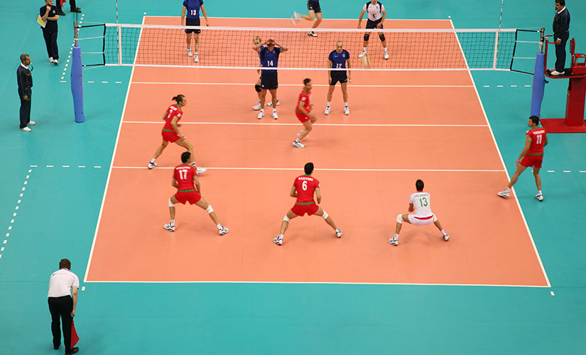

Voleybol nedir,nasıl oynanır?
Voleybol, kendine has bir topu olan ve ortaya bir file çekilerek oynanan bir spor dalıdır. Yani iki takım halinde file ile bölünmüş bir sahada yumuşak bir top kullanılarak oynanan bir spordur.
Voleybol oynamak için öncelikle iki takım oluşturmak gereklidir. Voleybol oynayacağınız yer kapalı veya açık bir alan olabilir. En çok tercih edilen ise kapalı salonlardır. Kapalı salonların zemini voleybol oynamaya daha müsaittir. Voleybolun içerisinde olması gereken kurallar vardır. Bu kurallar çerçevesinde büyük bir zevkle voleybol oynayabilirsiniz.
Voleybolun amacı ise elinizdeki topu kurallara uygun şekilde karşı sahaya atarak sayı kazanmaktır. Topu attığınız karşı taraftaki oyuncuların bu topu karşılayamaması gerekmektedir. Ayrıca sayı kazanmanız içşn topun sahanın içine düşmesi lazımdır. Bu şartları sağlayarak voleybol oynayabilirsiniz.